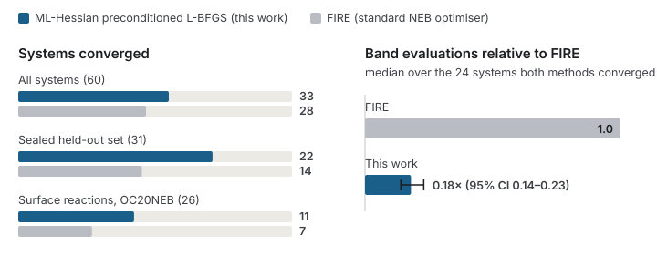

Finding transition states with machine-learned curvature
- Nudged elastic band
- MACE-MP-0
- Hessian preconditioning
- Safeguarded L-BFGS
The nudged elastic band (NEB) method finds the lowest-energy path of a reaction and its transition state, but each step needs expensive force calls, usually from DFT. I precondition the optimiser with the Hessian of a machine-learned potential (MACE-MP-0): projected onto the directions perpendicular to the path and paired with an analytical spring-force Jacobian along it, inside a safeguarded L-BFGS. Getting this to work meant diagnosing why curvature-based preconditioning breaks down near a saddle point, where the Hessian is indefinite and the two subspaces leak into each other.
- 22 / 31
- held-out systems converged, vs. 14 / 31 for FIRE, on a sealed set fixed before testing
- 0.18×
- FIRE’s band evaluations (median, 95% CI 0.14–0.23) where both converged
